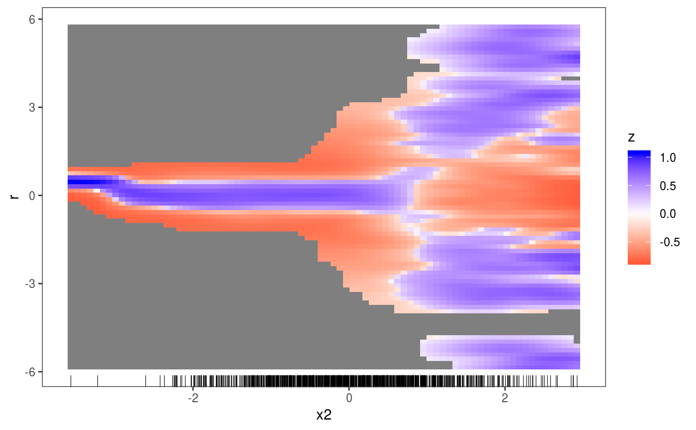

This layer calculates and plots how the empirical conditional density of the residuals, r, differs from its theoretical or model-based counterpart, along a covariate, x.
l_densCheck(n = c(80, 80), bw = NULL, tol = 1e-06, dFun = NULL, ...)
| n | vector of two positive integers, indicating the number of grid points at which the density is evaluated on the x and r axes. |
|---|---|
| bw | vector with two positive entries, indicating the bandwidth to be used
by the kernel density estimator of |
| tol | small positive numerical tolerance. The estimated density at a certain
location is set to |
| dFun | function used to compute the difference between the empirical (em) and theoretical (th)
conditional density of the residuals. By default it is |
| ... | graphical arguments to be passed to |
An object of class gamLayer.
This layer is mainly meant to work together with the check1D function. If check1D() is called with
residual type == "tunif" or "tnormal", then l_densCheck compares the conditional distribution
of the residuals with Unif(0, 1) or N(0, 1). By changing the distance function dFun
one could of course change both the distance metric and the reference distribution (see Examples below).
WARNING: if check1D() is called with type != "tunif" or "tnormal", then the default distance used by l_densCheck is
dFun <- function(.ed, .gr, .y) {
d <- dnorm(.gr, 0, sd=sd(.y)) # sd=sd(.y) !!!
d <- sqrt(.ed)-sqrt(d)
return(sign(d)*abs(d)^(1/3))
}
so the residuals are standardized using their own std dev sd(.y).
Hence l_densCheck might not detect that the mean estimated variance
under the fitted model is different from the residuals variance.
Hence it is safer to use residual types "tunif" or "tnormal", or a
customized distance function dFun (see below for an example on how to do this).
library(mgcViz); # Dataset where variance increases linearly with x2, for x2 > 0.2 n <- 1e3 x1 <- rnorm(1e3) x2 <- rnorm(1e3) dat <- data.frame("x1"=x1, "x2"=x2, "y"=sin(x1) + 0.5*x2^2 + pmax(x2, 0.2)*rnorm(n)) b <- gam(y ~ s(x1)+s(x2), data=dat) b <- getViz(b) # (Red) Blue indicates area where the empirical density # of the residuals is (lower) higher than it should be under # the model (residuals should be N(0, sigma) here). # Here there are clear signs of heteroscedasticity: # the conditional variance is is increasing for x2 > 0.2. check1D(b, "x2", type = "tnormal") + l_densCheck() + l_rug()# Suppose we want to compare the conditional density of the standardized residuals # not with a Gaussian, but with a Student-t density with 3 degree of freedom. # We could achieve this as follows: myDistance <- function(.ed, .gr, .y){ d <- dt(.gr / sd(.y), df = 3) d <- abs( sqrt(.ed) - sqrt(d) ) # We are using absolute difference between sqrt-densities } check1D(b, "x2", type = "response") + l_densCheck(dFun = myDistance) + l_rug()# NB comparing with a Student density is not useful for this example, but it illustrates # how both the distance function and the reference density can be customized.